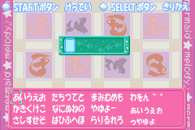
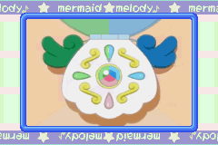

Mermaid Melody - Pichi Pichi Pitch (Japan)
Stateless / Passcode 💾 MultiBoot
Cartridge Identity
- Game Code
BMAJ(FamilyBMA)- Header Title
PICHIPICHI00- Maker / Revision
A4/ rev0- ROM Size
- 16.0 MiB (16,777,216 B)
- Save Media
None / Unknown- SHA-256
293e1495056a2210cd768e25e9ad7041a78722d6ef378eec593df8e31a3f0b05- Engine / SDK Group
comm-014(25 families)
Screenshots


Link Cable & Multiplayer Communications
This title contains detected communication capabilities: 💾 MultiBoot.
Detailed protocol specifications, SIO registers, Joybus commands, and MultiBoot sequences are documented in the Link & Multiplayer Reference.
- Single-Cart MultiBoot
- Single-Cartridge MultiBoot (Download Play) client/server handler · Thumb SWI 0x25 (
0xDF25):0x38e256,0x5384e6,0x8b890c,0xc49c66
Cartridge Storage Architecture: Stateless / Passcode
Zero non-volatile battery hardware: This cartridge PCB contains ROM only (no SRAM, Flash, or EEPROM chips). Progression is preserved via on-screen passcodes or session-only gameplay. No
.sav file is generated or required.
ROM Assets, Compression & Audio
- BIOS Compression
- LZ77 (
0x10): 1,522 streams · RLE (0x30): 0 streams - ROM Pointer Tables
- 32 tables (17 pointing to validated compressed streams)
- SDK Backup Tags
SRAM_V112
Asset Map (formatkit.asset-map.v1)
Download BMAJ-r0-293e1495056a2210.asset-map.json.gz (445,896 B (435.4 KiB)) Verified PASS · 70.72% coverage
| Metric | Bytes / Value | Entries |
|---|---|---|
| Identified | 11,799,492 B (11.25 MiB) (70.33%) | 4,403 |
| Mapped | 0 B (0.00%) | 0 |
| Opaque | 65,681 B (64.1 KiB) (0.39%) | 1 |
| Unknown | 4,912,043 B (4.68 MiB) (29.28%) | 3,945 |
| Total ROM Size | 16,777,216 B (16.00 MiB) | 8,349 |
| Coverage % | 70.72% | — |
| Entries w/ Code Refs | 2,729 / 8,349 (32.69%) | — |
Top Identified Formats: audio.konami-sample (2,319 · 11,105,120 B (10.59 MiB)) · compress.bios-lz77 (1,615 · 646,616 B (631.5 KiB)) · gfx.gba-palette (465 · 32,160 B (31.4 KiB)) · compress.bios-rle (1 · 10,692 B (10.4 KiB)) · compress.bios-huffman (2 · 4,712 B (4.6 KiB)) · gba.rom-header (1 · 192 B)
Largest unknown Extents (Headerless / Custom Asset Candidates)
| Offset | Size | Shannon Entropy | Code Refs |
|---|---|---|---|
0x00BF8BB7 | 766,017 B (748.1 KiB) | 7.197 bits/B | 0 |
0x00CB3C18 | 634,848 B (620.0 KiB) | 7.351 bits/B | 0 |
0x00323872 | 454,242 B (443.6 KiB) | 5.977 bits/B | 0 |
0x00B5217C | 269,188 B (262.9 KiB) | 6.174 bits/B | 1 |
0x00E00E10 | 246,096 B (240.3 KiB) | 7.073 bits/B | 0 |
gzip -dk BMAJ-r0-293e1495056a2210.asset-map.json.gz && gbakit map verify rom.gba BMAJ-r0-293e1495056a2210.asset-map.json
gbakit assets export rom.gba --asset-map BMAJ-r0-293e1495056a2210.asset-map.json -o out/Text, Fonts & Scene Data
- Primary Text Encoding
- Compressed / custom-encoded text (
13ASCII strings ·2Shift-JIS runs) - Font & VWF Indicators
- VWF Width Table 1bpp Font · BIOS SWIs: BitUnPack
0x10:0· LZ770x11/12:4· Huffman0x13:1· RLE0x14/15:1 - Scene & Packaging
14ROM pointer tables (≥32 entries,1≥200) ·0relativeu32TOCs ·69OAM metasprite hits
Hardware MMIO Subsystems
ppu_display0x8000560,0x800061c,0x80007b8,0x80170cc,0x801ba58,0x801bb28save_bus_sram_flash0x80035f4